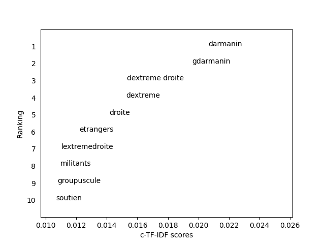

Réforme des retraites
Suppression redevance audiovisuelle
Prix de l'énergie pour les artisans boulangers
Logement
Précarité étudiante
Innovation, FrenchTech et startups françaises
Uber
Hôpital et santé publique
Prévention et traitement du cancer
Fin de vie et soins palliatifs
Education nationale
Harcèlement scolaire
Uniforme à l'école
Énergie et transition énergétique
Politique énergétique européenne
Sécheresse et changement climatique
Transports et écologie
Train et transports en commun
Vélo
Chasse et biodiversité
Consommation et production de viande
Incendies et Pompiers
Déconjugalisation de l'AAH
Constitutionnalisation du droit à l'IVG
Droits des femmes
Violences faites aux femmes
Droits des enfants et violences intrafamiliales
Homophobie et droits LGBT
Laïcité
Dénonciation islam radical
Abolition de la corrida
Défense nationale et armées
Service National Universel
Sécurité intérieure
Prison et Justice
Incivilités routières
Fusillade centre culturel kurde
Meurtre professeure Saint-Jean-de-Luz
Meurtre de Lola Daviet
Gendarmerie et sécurité
Guerre en Ukraine
Relations avec Israël-Palestine
Soutien au peuple iranien
Relations diplomatiques avec l’Algérie
Invasion Arménie par Azebaïdjan
Sauvetage de migrants en mer
Elections présidentielles au Brésil
Giorgia Meloni
Mayotte
Propos racistes à l'Assemblée
Organisation des JOP 2024
Affaire Quatennens
Controverse Hanouna-Boyard TPMP / Médias Bolloré
Critiques coupe du monde au Qatar
Hommage victimes terrorisme
Hommage Vel d'Hiv / Shoah
Hommages 11 novembre et Libération
Vel d'Hiv / Pétain / Mémoire Vichy / Jaurès
Fête Nationale
Sainte-Barbe / Pompiers
Mort Elisabeth II
Mort Benoit XVI
Prix Nobel Annie Ernaux
Annonces et hommages décès
Bravo les bleus / Football
Bravo le Rugby / Sport
Match France-Maroc
Sport, Téléthon, Nouvelle-Zélande
Marché de Noël / Joyeux Noël
Epiphanie
Interventions à la TV ou à la radio
Bras d'honneur de Dupond-Moretti
Injure raciste Carlos Martens Bilongo / Afrique
Agression Permanence / Immigration / Extrême-Droite
Visions de la République et de la Nation
Agendas et campagnes
Groupes d'amitié avec pays étrangers / Chili
Relations franco-allemandes
Intempéries en Corse/ Corse
Territoires ultramarins
Biélorussie, Russie, Ukraine
FDO blessées, refus d'obtempérer, agressions
Condition animale
Grève des éboueurs
Enfance et numérique
Twitter et généralités

médias
députés